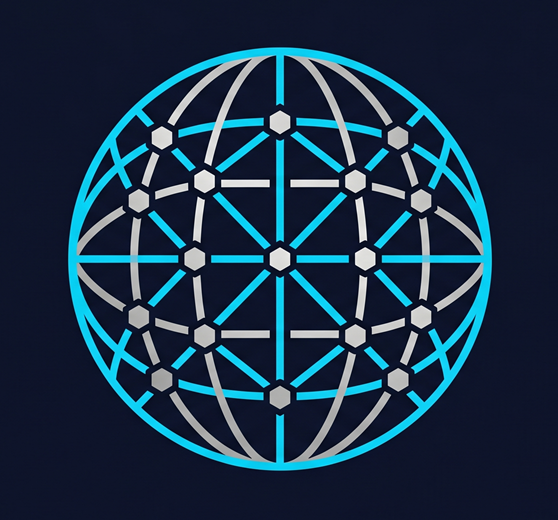

28K+ Bookings
SkyBridge Ticketing Platform
Engineered a high-traffic system with 99.9% uptime during peak hours.
LaravelMySQLReal-time
Explore Senior

Deep analysis of business logic and audit requirements before writing a single line of code.
Designing scalable, normalized database schemas and SOLID backend structures.
Implementing features with test-driven development to ensure zero regressions.
Final system integrity check ensuring 100% data consistency and compliance.

Governing LLMs into Enterprise Principal Architects.
A zero-compromise Sovereign Architectural Engine. Most teams use AI as a high-speed junior developer that silently introduces technical debt and context drift. This OS hard-loads strict version-controlled rules from a centralized brain prior to execution, ensuring every generated line aligns with SOLID principles, OWASP standards, and bleeding-edge frameworks.
Seasoned Software Engineer with a technical background spanning over 15 years in the Egyptian tech landscape.
I specialize in Laravel 13 and Filament v5, focusing on building secure, scalable architectures for complex business logic. In addition, I engineer Sovereign AI Operating Systems that enforce LLM governance and eliminate context drift. My unique dual-expertise in Internal Audit & System Integrity allows me to deliver "audit-ready" applications that ensure 100% data consistency and compliance.
Engineered a high-traffic system with 99.9% uptime during peak hours.

Transformed traditional marina docking into a fully automated digital workflow.

Built a high-flexibility survey engine with automated reporting.

Notification architecture and real-time appointment booking system.
Foundational education in business administration and management — providing a unique lens for building audit-ready enterprise systems.
Nearly two decades of hands-on architectural experience. Expert-level mastery across PHP, Laravel, and modern web ecosystems through continuous real-world implementation.
"Moataz did not just build our system — he understood our business first. The audit module he designed saved us weeks of manual work every quarter."
"We needed someone who could handle backend complexity without hand-holding. Moataz delivered a clean architecture and the dashboard was exactly what we needed."
"What sets Moataz apart is his attention to data integrity. He caught edge cases in our booking flow that nobody else noticed. Solid engineer."
Initiate Direct Line